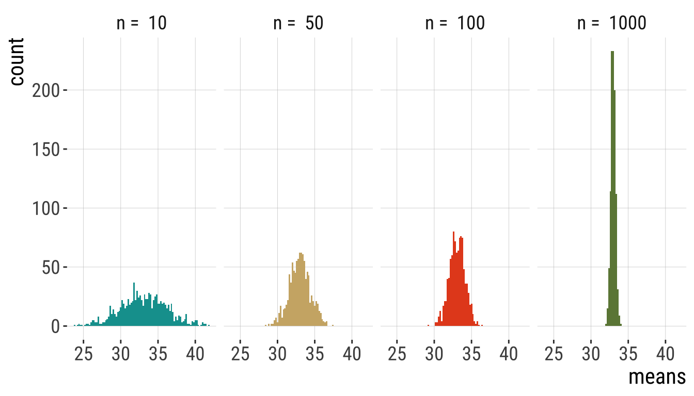
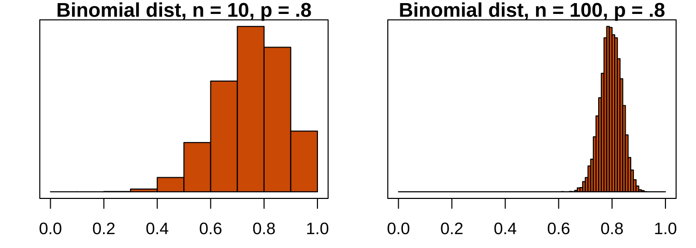
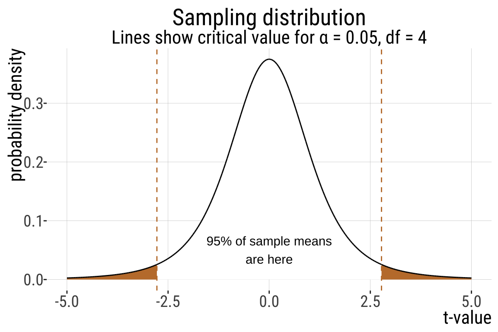

9.2. Normal Distribution
Normal Distribution| Acknowledgments to Y. Brandvain for code used in some slides
Keywords
CLT, z- and t-distributions
Outline/Learning Goals
- CLT
- Probability of sample mean in a given range
- T-distribution
- One sample t-test
- CI
Recap
- The normal distribution is a continuous distribution: probability is measured by the area under the curve, not by the height of the curve
- It is symmetrical around its mean
- The probability density is highest around the mean
- The mean and variance (or standard deviation) are sufficient to characterize any normal distribution
- For a normally distributed variable, ROUGHLY 2/3 of values are within 1 SD of the mean and ROUGHLY 95% are within 2 SD of the mean
The Sampling Distribution of Samples from a Normal Distribution
Means of normally distributed variables are normally distributed
The mean of the sample means is \(\mu\)
The standard deviation of the sample means is the standard error, and equals \(\sigma_{\overline{Y}}=\frac{\sigma }{\sqrt{n}}\)
\[\mathcal{N}(\mu = \overline{Y}, \sigma_{\overline{Y}}=\frac{\sigma }{\sqrt{n}})\]
Law of Large Numbers
Larger samples make for tighter distributions & smaller standard errors
Central limit theorem
Central limit theorem
The sum or mean of a large number of measurements randomly sampled from ANY population is approximately normally distributed.
Web Apps
Seriously it’s the best way to grasp this: do it yourself. All of these will REALLY help you when studying this content
CLT: https://www.zoology.ubc.ca/~whitlock/Kingfisher/CLT.htm
Sampling from the Normal: https://brandvain.shinyapps.io/standardnormal/
Sample means with a normal distribution: https://www.zoology.ubc.ca/~whitlock/Kingfisher/SamplingNormal.htm
CLT: https://shiny.maths.nottingham.ac.uk/pmzdjc/YujingCLTApp/?showcase=0
Confidence intervals for the mean: https://www.zoology.ubc.ca/~whitlock/Kingfisher/CIMean.htm
Another one from CLT: https://shiny.maths.nottingham.ac.uk/pmzdjc/YujingCLTApp/?showcase=0
Example: Button pushing (1/)
Imagine 20,000 people are asked to press a button. Time is measured in seconds.
- Half are anxious & do this quickly \(\mathcal{N}(10,1)\)
- Half are not & do this slowly \(\mathcal{N}(70,15)\)
Imagine that 20000 people are asked to press a button.

Utility of the Central Limit Theorem ✨
The Central Limit Theorem explains why so much in the world is normally distributed!!!
It also means that (with large sample sizes) many statistical tests that assume data are normal still work ok, if data are not totally normal. E.g. ANOVA (difference in means between groups)
Finally, we can use the CLT to speed up tedious calculations for large samples from non-normal distributions.
Approximating the Binomial
When can you do this? a) When number of trials (\(n\)) is large and b) probability of success (\(p\)) is not too close to 0 or 1.
Remember: the expected mean number of successes under the binomial is \(np\), so you can can approximate the binomial by a normal distribution with \(\mu = np\) and \(\sigma = \sqrt{np(1-p)}\)
NOTE: The sampling distribution of the binomial looks normal for large samples:

Takeaways
The normal distribution is common in nature.
A normal distribution is fully characterized by its mean and standard deviation.
The distribution of sample means from a normal is normal distributed with mean = \(\mu\) and standard deviation = \(\sigma/\sqrt{n}\).
Any normal distribution can be transformed into the standard normal.
The CLT implies that with sufficiently large sample sizes, the sampling distribution of non-normally distributed populations is normal.
Student’s t distribution (1/)
- The sampling distribution for the sample mean is a normal distribution if the variable is itself normally distributed. As a result, we could use the to calculate probabilities for under the normal curve:
\[Z=\frac{\bar{Y}-\mu}{\sigma_{\bar{Y}}}\] where \(\sigma_{\bar{Y}}\) is the standard error of the mean, aka, the standard deviation of the sampling distribution.
- But…in most cases, we don’t know the real population distribution, so we don’t know \(\sigma\). We only have a sample
Student’s t distribution (2/)
We do know \(s\), the standard deviation of our sample. We can use that as an estimate of \(\sigma\)
A good approximation to the standard normal, Z, is, then:
\[t=\frac{\bar Y - \mu}{SEM_{\bar Y}}=\frac{\bar Y-\mu}{s/\sqrt{n}}\] - Because of this, the standard normal distribution (aka the Z distribution) is not quite right (although it is almost right), because it does not incorporate uncertainty in our estimate of the standard deviation.
- We can use the \(t\) distribution instead!
The solution: the T distribution
A sampling distribution that includes uncertainty in our estimate of the standard deviation.
There are many \(t\)-distributions – each associated with some numbers of degrees of freedom
The \(t\)-distribution assumes that
Data are collected without bias
Data are independent
The mean is a meaningful summary of the data
The variable of interest is normally distributed in the population
T is a common statistic (1/2)
- Most sampling distributions are normal
- We almost never know the true population standard deviation
- So we deal with t-values a lot in statistics
- Every time we see a t-value, t is the number of standard errors away our estimate is from its hypothesized parameter value under the null hypothesis.
T is a common statistic (2/2)
- Like the \(Z\) distribution for a sample mean, the \(t\)-value describes the number of standard errors between our sample mean and the population parameter.
\[t=\frac{\bar X-\mu_{0}}{SEM_{\bar X}}=\frac{\bar X- \mu_{0}}{s/\sqrt{n}}\]
\(\mu_{0}\) is the hypothesized population parameter.
\(df=n-1\), where \(n\) is the sample size.
Calculating the degrees of freedom
The number of degrees of freedom describes how many individual values we need to know after building our model of interest, before we know every data point.
For example, if you have a sample of size:
\(n = 1\), and I tell you the sample mean, you know every data point, and there are zero degrees of freedom.
\(n = 2\), and I tell you the sample mean, you need one more data point to fill in the rest, and there is one degree of freedom.
\(n = 3\), and I tell you the sample mean, you need two more data points to fill in the rest, and there are two degrees of freedom.
So, when we are estimating a sample mean \(\bar{X}\) , the degrees of freedom equals the sample size minus one: \(df = n-1\)
Comparing T and Z distributions (1/)
- A \(t\)-distribution looks a lot like the standard normal distribution

Comparing T and Z distributions (2/)
- \(Z=\frac{\bar Y-\mu}{\sigma_{\bar Y}}\); \(t=\frac{\bar Y-\mu}{SEM_{\bar Y}}\); using \(SEM_{\bar Y}\) instead of \({\sigma_{\bar Y}}\) introduces sampling error.
- As a result, the sampling distribution for \(t\) is wider (“fatter”) on the tails than the one for \(Z\) (the standard normal)
- I.e., the tails of the t-distribution have more probability than those of the Z-distribution.
- Why? \(t\) models the possibility that our estimate \(s\) is an underestimation of \(\sigma\).
- As our sample (and therefore our degrees of freedom) gets larger, the \(t\) distribution gets closer and closer to the standard normal distribution because our confidence in the estimate of the standard deviation increases.
This difference in the tails is CRUCIAL! The tails matter most when calculating confidence intervals and testing hypotheses.
What do we use the t-distribution for?
- Confidence intervals
- Hypothesis testing
Exact CI
- We find the \(1-\alpha\) confidence interval for the estimated mean of a sample from a normal distribution.
- To estimate the upper (or lower) \(1-\alpha\) confidence intervals:
\[(1-\alpha)\%\text{ CI } = \bar{X} \pm t_{\alpha(2)} \times SEM_{\bar X}\]
\[ = \bar{X} \pm t_{\alpha(2)} \times s / \sqrt{n}\]
, where \(t_{\alpha(2)}\) is the critical two-tailed t value for a specified \(\alpha\) value.
This makes sense because this should contain 95% of sample means estimated from a population.
CI example: Elephant gestational period (1/)
- A sample of 5 pregnant elephants
- Five elephants that gave birth after 547, 551, 571, 567, 580 days pregnant.
- How confident are we about our mean estimate here? Let’s find the 95% CI.
\(df=5-1=4\)
\(t_{0.05(2),4}\)
\(\bar{Y}=563.2\)
\(s=13.864\)
\(SEM_{\bar{Y}}=\frac{s}{\sqrt{n}}=\frac{13.864}{2.2361}\approx6.2\)
CI example: Elephant gestational period (2/)
\[(1-\alpha)\%\text{ CI } = \bar{Y} \pm t_{\alpha(2), df} \times SEM_{\bar Y}\]
\[95\%\text{ CI } = 563.2 \pm (t_{\alpha(2),4} \times 6.2)\]
- What is \(t_{.05/2,df = 4}\)? Let’s find out!
CI example: Elephant gestational period (3/)

CI example: Elephant gestational period (4/)
In R:
- We find \(t_{\alpha/2}\) in R with the
qt()function: \(t_{\alpha/2}\) =qt(p = alpha/2, df = 4). Remember that we divide \(\alpha\) by two in this calculation to include both sides of the sampling distribution.
Elephant gestational period (5/)
Lower 95% CI with 4 df
\[95\%\text{ CI } = 563.2 \pm (t_{\alpha(2),4} \times 6.2)\]
-
\(t_{0.05(2),4}\) indicates the 5% critical t-value for \(df=4\).
- \(\alpha\): the fraction of the area under the curve lying in the tails of the distribution.
-
“(2)”: indicates that the 5% area is divided between the two tails of the —that is, 2.5% of the area under the curve lies above and 2.5% lies below
Elephant gestational period (6/)

Elephant gestational period (7/)
\(95\%\text{ CI } = 563.2 \pm (t_{\alpha(2),4} \times 6.2)\)
\[ = 563.2 + (2.776445 \times 6.2)=580.41\] \[ = 563.2 - (2.776445 \times 6.2)=545.986\] \[545.99<\mu<580.41\]